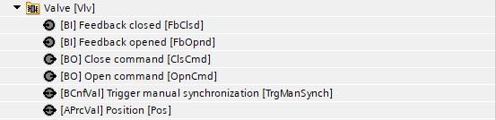
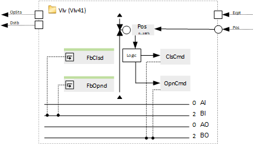
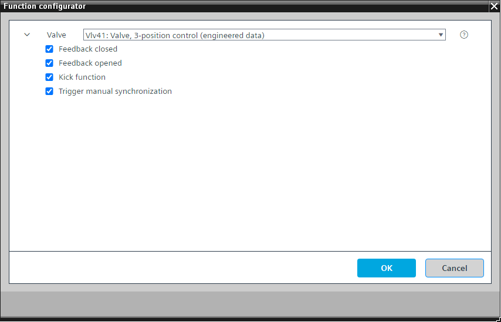

[Vlv41] 阀门，三位控制
Program block, name / node subtype: [Vlv41] Valve, 3-position control
Library hierarchy: Universal equipment
Family: Vlv
项目树 | 图表 |
|---|---|
|
 |  |
Configurator


程序块存储在没有 I/Os. 的库中 使用auto-create and auto-connect函数创建 I/Os 和 /or 将它们连接到接口块，例如 R_A、CMD_B。或者，从包含库中预定义 I/Os 的文件夹中取出 I/Os，并从工厂中取出 /or，并将它们连接到接口块。
通过将调制控制信号转换为具有 3 位行为的 2 个二进制输出信号来控制阀门的位置。
这种逻辑可确保阀门在特殊应用中保持打开或关闭状态，随着时间的推移，阀门可能会发生漂移。
请勿使用三位控制器来控制定位时间小于 30 秒的执行器。
打开和关闭时间可以在程序中参数化。
该程序块具有以下可选功能：
Option: Feedback closed (1xBI)
读取执行器的末端开关以了解阀门的关闭位置。
支持同步功能。
Option: Feedback opened (1xBI)
读取执行器的末端开关以了解阀门的打开位置。
支持同步功能。
Option: Kick function
通过生成脉冲，在最短关闭时间过后，在配置的时间以定义的脉冲长度打开阀门，从而防止停机损坏。
This is configured in the program.
Option: Trigger manual synchronization
触发手动同步的软件按钮。
姓名 | 描述 | 类型 | 报警/通知类 | 趋势/类型 |
|---|---|---|---|---|
Pos | Position | APrcVal: Analog process value | No | No |
OpnCmd | Open command | BO：二进制输出 | No | No |
ClsCmd | Close command | BO：二进制输出 | No | No |
姓名 | 描述 | 类型 | 报警/通知类 | 趋势/类型 |
|---|---|---|---|---|
FbOpnd | Feedback opened | BI：二进制输入 | No | No |
FbClsd | Feedback closed | BI：二进制输入 | No | No |
TrgManSynch | Trigger manual synchronization | BPrcVal: Binary process value | No | No |
描述 |
|---|
Kick function |